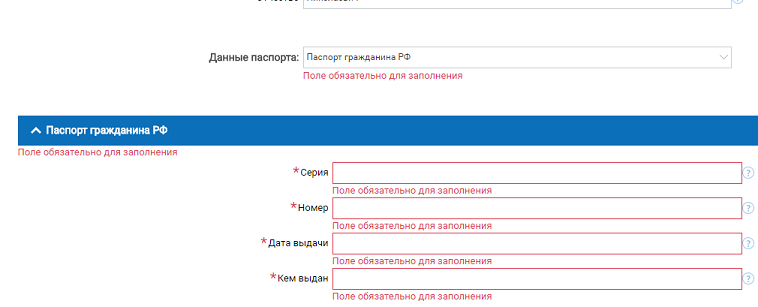

Верстаем формочки!
Формы — отстой
- Надо набирать текст, переключать раскладку.
- Вспоминать почту, пол, дату рождения.
- Выбирать что-то из списков.
- Терпеть унижения от валидатора. This field is required!
Формы везде
🍕
До-до-доставка...
Язык
Форма как предложение.
Заголовок — подлежащее,
кнопка — сказуемое.
Прочие элементы — второстепенные члены.
Простое и сложное предложение.
Доставка → Оформить
Расположение,
группировка,
порядок
- «Кирпичная кладка» визуально усложняет, глазу не за что зацепиться.
- Можно забыть, что заполняешь, если отвлечься.
- Визуально проще, всегда ясно, что заполняешь (взгляд новичка).
- Размер полей помогает понять, что нужно вводить (+ к информативности).
Рваный левый край усложняет чтение.
Форма выглядит неряшливо.
- Левый край ровный, читать проще, выглядит приятнее.
- Поля сгруппированы по смыслу.
Привычный порядок полей нарушен,
после логина обычно идет пароль.
Неявный порядок иногда приводит к неожиданностям.
Обратная связь
Ошибки
Исправлять молча или сделать невозможными:
- использовать маски ввода,
- показывать набор вариантов вместо полей ввода,
- делать недоступными даты в календаре,
- дизейблить кнопки,
- автоматически исправлять латиницу/кириллицу,
- расставлять дефисы и пробелы в номерах телефонов и документов.
- Не отправим, пока не заполним.
- У полей есть объяснялочки.
- Три точки на кнопке, значит еще не конец (как Save... из меню File).
Не всегда нужно дизейблить.
Если поле одно, то форма выглядит нерабочей.
Пустое поле еще не ошибка. Ошибка — если ввел не то.
- Поля можно заполнять в любом порядке, это не ошибка.
- Всплывающие сообщения могут закрыть что-то полезное,
лучше предусмотреть место рядом с полями.
Теорема о попапах
«Попап — самое тупое, что можно сделать»
Дизайнер полагается на волшебство экрана.
В книге или на визитке так не сделаешь.
Выводить ошибку нужно рядом с полем.
Обязательные поля *
- Формы ОС обходятся без звездочек.
- Обязательные поля – просто поля.
- Дополнительные поля помечены пояснениями.

Технозависимо.
По-человечески.
Submit
Финальная кнопка — на плашке. На этой же плашке и чекбоксы, чтобы было видна связь. https://bureau.ru/books/ui/363- Нижняя плашка деалет более очевидным путь к победе над формой.
- Чекбоксы на одной территории с кнопкой как бы говорят, что без них сабмит не сработает.
Конец
Спасибо за внимание